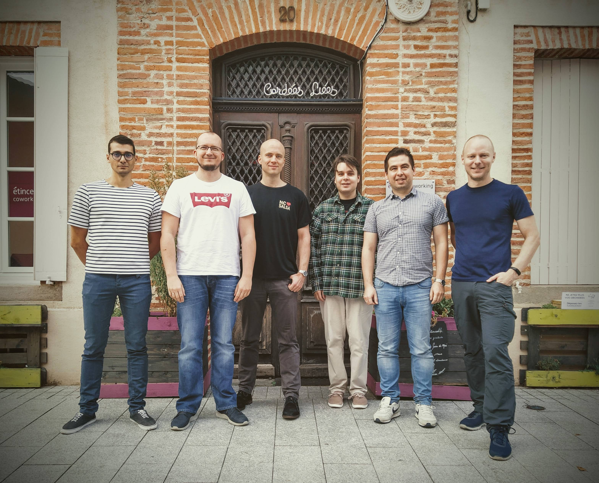
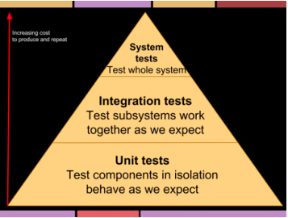
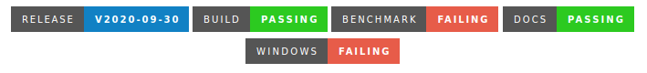
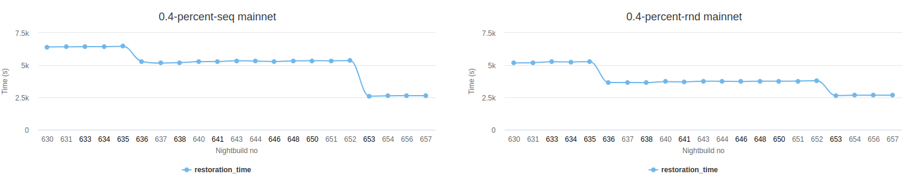

This is a blog entry draft.
“Can you write a blog post about the QA process that Adrestia has?”. When I saw this question on my slack I thought something is not right there. It took me several minutes but I finally got it. That’s right, there is no such thing as “QA process” in Adrestia, because QA (i.e. Quality Assurance) is there on every level of the Process we follow. Top to bottom. What derives from this fact is also a simple, yet powerful, principle: QA is responsibility of everyone.
I know, that’s a huge cliche. People who push Agile often say QA is everyone’s responsibility - which usually means no one really takes that responsibility. QA is not easy and maybe not everyone likes it. More importantly QA is not only about testing but even if it was, testing in Adrestia is actually super fun!
How does it play in real life? Let me try to present QA aspects of work in Adrestia team.
The Team
Anyone working in the software development, especially in QA related role, is well aware of the waterfall-y sins, that occur (more often we’d like to admit) on the teams which call themselves Agile, Scrum, Extreme etc. The most common one is something I like to call handover to QA approach. I suppose it is pretty self-explanatory, but let me elaborate. It’s sort of mindset/stance where a feature/story/deliverable increment of product is no longer my business when I finish coding it. I jump to another story and just let the other one be QA-ed. I might fix an issue when QAs find it, no problem, but man it’s already in QA, so give me a break, I added unit tests, ok?:). Well, in Adrestia it’s quite the opposite. Yes, stories are moved into QA column after they are coded but it is not for testing, but for QA review and that’s very different. I’ll explain later.
Adrestia is fairly small team. It consists of 8 people including Software Engineers, Product Manager and a QA Engineer (soon more than one!). Considering the number of products the team is responsible for, this is really not a lot. Additionally, we are distributed among 3 continents which brings own challenges in terms of communication and availability.

Part of the team during training in Albi, France in 2019. One of the few occasions we can meet in person.
Can you imagine handover to QA approach in such environment and additionally where dev:qa ratio is 6:1? That would be a recipe for disaster! Off course everyone on the team has their primary role, but even if you don’t have a QA in your position’s name it doesn’t mean QA is not your business. It is, and we are all well aware of that! Plus the person with actual QA next to his name additionally needs makes sure that everyone’s responsibility thing actually happens.
How? Let’s move on to the process.
The Process
Adrestia’s Development Process is heavily inspired by extreme programming principles. That’s nothing really revolutionary. Product backlog, stories estimation, acceptance criteria, weekly iterations and retrospective. All those elements are in place. Let’s focus on those elements that, in my opinion, further contribute to increasing QA.
Estimation
Our User Stories are described following Role-Feature-Reason template using given-when-then formula. Each story must have clear acceptance criteria stating when it is considered to be done.
We discuss and estimate stories from the backlog during our weekly Iteration Planning Meeting. Each story is discussed up-front to make sure the team has common understanding what it is about. It is opportunity to ask for precisions and clarify possible disambiguations. It is also the first chance to discuss how the story can be possibly tested. What are the areas we need to focus on when testing? Do we need any specific tests for that? These are the questions we discuss from the very beginning. What comes from this is that the testing effort is also included in the estimation!
The stories are then estimated via blind-voting in a 4-value scale: small, medium, large, uncertain. The last value is an indicator that something is unclear. Maybe we need to gather more requirements, or perhaps the story is too big and needs to be broken down into smaller chunks. We try to gain consensus around the estimation value. It is an indicator that the story is well understood, and we have all possible information in terms of requirements.
Pilot / Co-pilot
Once estimated user stories are assigned to and owned by single team member (a.k.a Pilot) who is seconded by Co-pilot. Pilots are responsible for clarifying requirements further, breaking stories into tasks in GitHub and implementation. Co-pilots are basically there to “watch Pilot’s back”. They are primary reviewers. First, for their architectural decisions which are gathered inside the tasks and then code. They are also their primary challengers against whom they can test their ideas. That doesn’t mean other team members won’t weigh in. Hailing the rule of collective ownership everyone is free and encouraged to contribute, but it is the Pilot (or Tech Lead) who makes the final call. The crucial thing here is that the Pilot is never left alone and has an assigned person to consult with from the very start. That is really beneficial.
Coding standards and code reviews
Once the story is broken down into tasks in GitHub with the clear plan on how to approach it technically, the coding begins. We follow Coding Standards that was mutually agreed upon. The benefit is that we have roughly the same coding style across our code base. Therefore even when somebody changes context (even between different repositories) he may expect that there will be no unfamiliar obscurities and can focus solely on the task. The standard is obviously not set in stone. Modifications happen, usually followed by slack discussions and voting.
All our repos are on GitHub, so we use PRs to deliver changes to the code base. Each PR is reviewed, primarily by the Co-pilot, but often by other team members too. Review is done according to our guidelines and it is all about feedback. What is important it is often not only about reviewing the code alone but literally pulling the branch and playing with it. Every PR needs to be reviewed and approved by at least one team member.
Testing
In a nutshell we have one simple rule. Every new code needs to be tested. Period.
Ideally tests, whether they are property, unit or integration, are created before (or along with) production code. That gives us opportunity to see the test fail first and passes after the implementation. It is a common TDD practice that we also try to follow.
Having said that every new story must be covered with test before it comes to QA review and it is a responsibility of Software Engineer to make sure it is.
The presence and accuracy of tests is verified initially already during code review. No need to mention that PR before gets merged into master, needs to pass all existing and new tests in CI environment, and believe me, there are a lot of tests there on different levels of the system.
There is also one important aspect to be noticed. Tests actually become integral part of the deliverables. They are held in the same repository as the product, and they must pass before anything gets merged or released.
QA review
Now we hit the infamous handover to QA part. But have you noticed the task is already well covered in all kind of tests? So what happens now? Well, it is the final review from the QA standpoint. Here we make sure:
- we fullfiled all acceptance criteria,
- existing tests are enough and sufficient,
- we don’t miss anything from documentation side,
- generally we don’t miss anything from the QA or product perspective.
- it actually works!
Here, in principle the task is either accepted or moved back to in progress with additional comments clarifying what may be missing. In practice QA would often implement additional tests, polish the documentation or simply fix minor issues here and there to make the deliverable shine as it suppose to.
At this stage it is also final opportunity to actually explore the given feature end-to-end on sets of environments other than CI. In case of cardano-wallet we might want to take it on journey to testnet or mainnet to see how new feature plays there.
Bugs
“The only one who never makes mistakes is the one who never does anything,” Napoleon Bonaparte once said. Well, that’s true and that’s the reason bugs sometimes happen to us too. Luckily we know how to handle them.
Every bug becomes a ticket in GitHub. It is described with clear reproduction path, actual and expected outcome with any additional information that may be useful (logs, screenshots etc.) and classified according to our classification guidelines. We use severity for defining impact on the system and priority for indicating the importance from product standpoint.
Important to note every bug fix, similarly to new feature code, starts with the automated tests that reproduces it. Again, following TDD rule, test fails first and passes after the fix.
Moving on bug fixes follow the same procedure: code review and QA review/re-test.
Technical debt
Technical debt is a reality in the software development whether we like it or not. The important thing is to acknowledge it a tackle systematically. That’s what we do.
Technical debts are first often pinpointed in the source code with TODO and FIXME keywords, and then they end up as actual user stories in our backlog. From that point they undergo the same process as normal user stories from estimation all the way down to QA review.
Process refinement
The process we follow is obviously not set in stone and may be tailored to the needs of the team and circumstances over time. Good opportunity for that is Team Retrospective meeting we held every once in a while.
Retrospective is actually very powerful tool, sadly often underestimated. We do make use of it. It gives opportunity to collectively reflect on things and discuss what can be improved. As an outcome we want to have a list of actionable items, which often… no surprise… end up in the backlog as tasks. Whether it is a process improvement, internal documentation update or perhaps a decision we want to spend the whole week for tackling bugs and technical debts.
Tests
Ok, we dealt with the process focusing especially on its QA elements. Here I’d like to concentrate on explaining what kind of tests we have and why, and also shed some light on how they are executed in CI. I’ll be using cardano-wallet as an example.
Types and levels of tests
Obviously we value automated tests over manual. Actually, when it comes to cardano-wallet we only have 6 manual scenarios that are executed as part of every Release Checklist.
All automated tests are executed in CI environment in the following circumstances:
- on every PR merge (most of the functional suite)
- every night (full functional suite + full non-functional suite)
Functional suite consists of:
- low level unit and property tests that operate on a method level.
- integration level tests verifying a few components being integrated.
-
system level tests (which we actually also call integration tests) that test against fully integrated system along with it’s third party integrated backends, which in case of
cardano-walletis either cardano-node or jormungandr. We run tests for both of them.
Non-functional suite basically consist of performance benchmarks and database migration tests. They are:
-
restoration benchmarks - measuring restoration along with a few wallet API operations on real
testnetandmainnetenvironments - latency benchmarks - measuring latency of most wallet operations on the API level on a private blockchain.
- database benchmarks - measuring performance of operations on database level.
- database migration tests - verifying that recent changes made to the system survive upgrade from the last 3 wallet versions.
Important to note that the whole functional suite is executed against all 3 operating systems cardano-wallet supports: Linux, Windows and MacOS. Also integration tests are executed in a full-blown private blockchain with very similar settings mainnet has.
Code smart, test smart
The number of tests there is in cardano-wallet is quite substantial. If one would consider counting in the examples from the property based tests I wouldn’t be surprised if we were actually talking millions. The number of integration tests alone varies between 600-700 which is quite a lot.
When you reach this number in your test suite you become to have all sorts of new challenges like increasing execution time and maintenance effort, more false positives, especially on the integration level.
The approach we have in mind when adding new tests is around for a while. The “Test Pyramid” - a metaphor that tells us to group software tests into buckets of different granularity. It also gives an idea of how many tests we should have in each of these group.

Test pyramid - source.
Implementing this approach starts with the code. Basically you can code things in a way that you need to integrate bunch of components to test it sufficiently, or you can be more granular allowing more tests to be performed at a unit level.
Visibility of results
There is no use in having a lot of tests if you have no visibility of the results. In Adrestia we like to know what is the status of tests in or repos.
Badges
Badges are very simple way to achieve visibility, and we like to use them. Pinned to repository it gives you clear picture of areas with possible problems and you can drill down from there to investigate further.

Badges on cardano-wallet repository.
Code coverage
May be a bit controversial to some. Off course, you can have 100% coverage and have really lousy tests. But still it is a good indicator of the areas in the code base that need more attention.
As for cardano-wallet, code coverage will be back soon.
Visualize
If there is an opportunity to visualize results of our tests we’ll go for it. Good example in cardano-wallet are benchmarks. Raw numbers gathered by benchmarking scripts are not very convenient to analyze.
So why not have nice charts that show how performance shapes overtime? Any potential deteriorations are much easier to spot and act upon in benchmark app.

Recent performance improvements in wallet restoration time visible in benchmark app.
Exploration
Having a lot of automated tests gives good level of confidence, but it will never be 100%. You cannot automate everything. The more complex your software is the more obscure ways users will find to take advantage of it.
Exploratory tests are often underestimated or misunderstood, but they are a real deal. QA (or Software) Engineer does not have to wait until QA review to start toying with the system. Reality is that we often don’t have the full requirements, and even if we have they might change. One way or another it’s good to be involved as soon as possible.
“An effective tester can always obtain valuable information by exploration, even if the sole purpose of exploring is to gather information for a more detailed test strategy.”
Above citation from Micheal Bolton’s Testing Without a Map says it all. And this is also important part of Adrestia QA approach.
Summary
Hopefully I was able to give some insights into how Adrestia team approaches QA. If you reached to this point, here’s a medal -> 🏅.